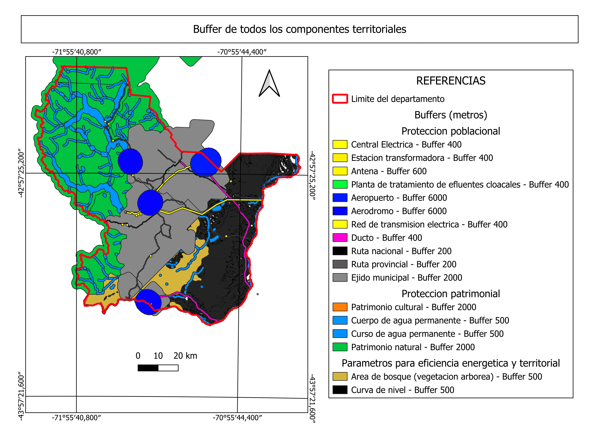

Portfolio GIS
Algunos proyectos desarrollados utilizando Sistemas de Información Geográfica, análisis espacial, procesamiento de imágenes satelitales y cartografía temática.

Área de estudio

Curvas de Nivel

Mapa de Vientos

Patrimonios

Usos del Suelo

Análisis Territorial

Buffers

Componentes Poblacionales

Actividades Productivas

Actividades No Agrícolas

Expansión Urbana